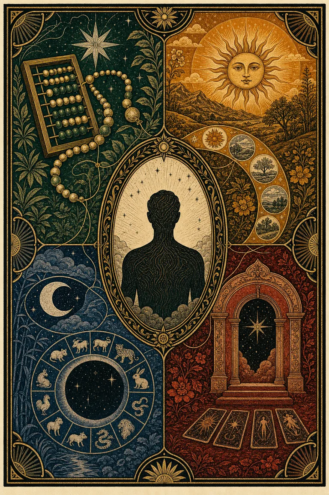
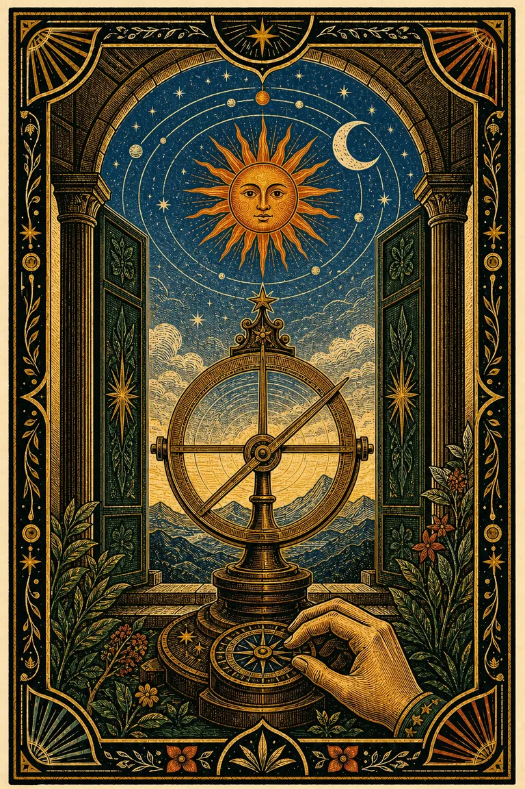
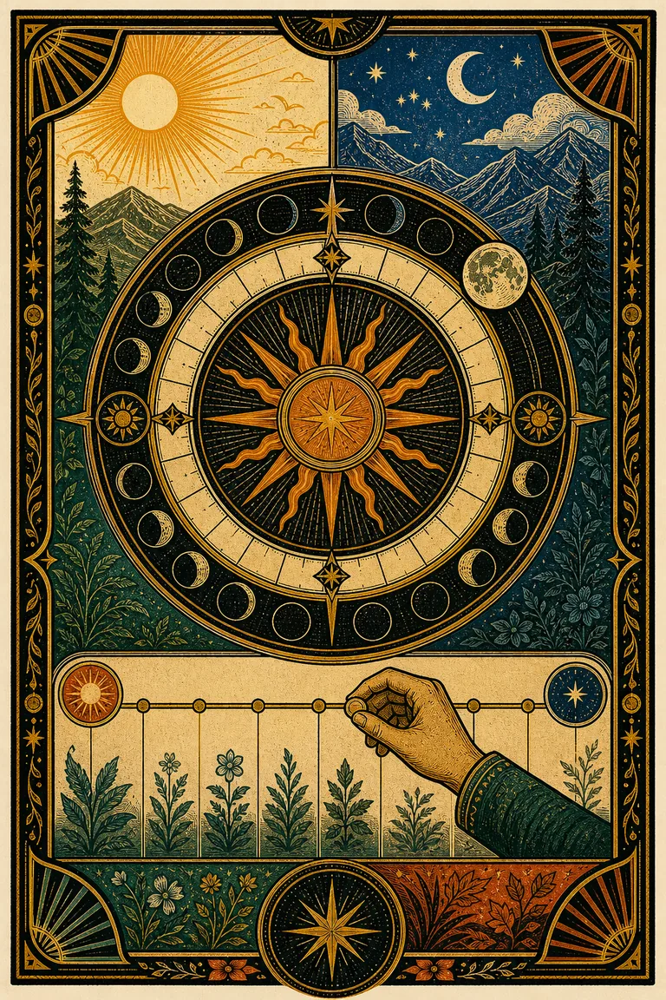
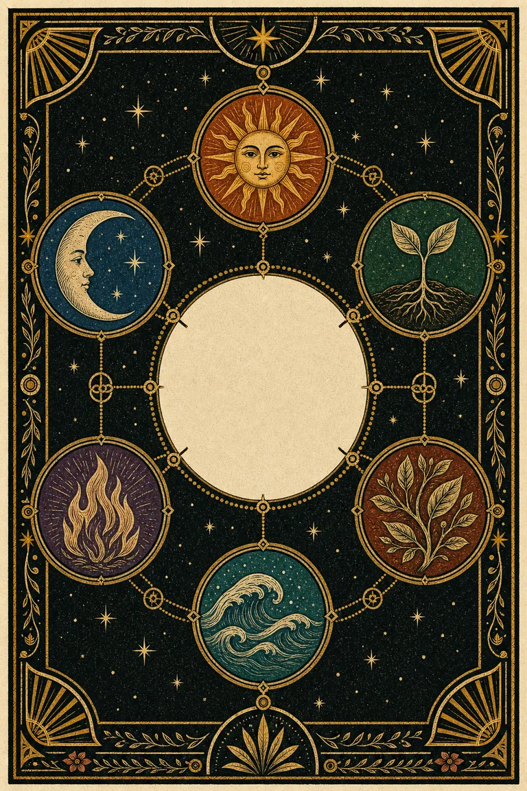

Soy
GratisTu mapa simbólico de base, construido desde los datos que declaras.
- Síntesis de señales que realmente convergen
- Cálculos y correspondencias visibles
- Lectura visual y compartible
Esoterismo aterrizado
No necesitas otra etiqueta. Necesitas ver de dónde sale una lectura, qué señales realmente coinciden y qué pregunta concreta te deja para tu vida o tus vínculos.

Tres escalas, una experiencia
Soy organiza patrones de base. Estoy observa ciclos que cambian. Mi círculo explora cómo se encuentran varias personas sin reducir el vínculo a un puntaje.

Tu mapa simbólico de base, construido desde los datos que declaras.

Una lectura del período para observar, priorizar y planificar con contexto.

Una lectura compartida para observar una pareja, una familia, un equipo o cualquier grupo significativo.
No decide si son compatibles. Organiza diferencias y puntos de encuentro para hacer mejores preguntas.
Cómo funciona
Calculamos cada señal por separado, buscamos una coincidencia que se pueda explicar y dejamos el resto como matiz. Si no hay convergencia, lo decimos.
Fecha, nombre y, sólo cuando corresponde, hora y lugar.
Cada número o correspondencia muestra cómo fue obtenido.
1+5+0+6+1+9+9+0 = 31 → 4Una señal principal aparece sólo si más de una tradición coincide.
La lectura termina en una tensión concreta y una pregunta útil.
Honestidad editorial
Puedes usar el símbolo como mapa sin confundirlo con una prueba científica, un diagnóstico o una orden.
La correspondencia heredada: ciclos, signos, números y relaciones simbólicas.
La operación verificable que transforma tus datos en un resultado.
El libro, tabla y página que documentan la variante usada o su límite.
Nuestra traducción editorial: conversacional, práctica y nunca presentada como diagnóstico.
FAQ
No. Soy/Estoy usa tradiciones simbólicas como mapas de reflexión. Orienta preguntas y observaciones; no dicta destinos ni reemplaza decisiones.
La hora exacta sólo se usa para cálculos que realmente dependen de ella, como ascendente y casas. Si no la sabes, esos resultados se omiten o se marcan como aproximados.
No forzamos una conclusión. La lectura muestra señales distintas y te permite revisar cada componente por separado.
No. Mi círculo no entrega sentencias ni porcentajes de compatibilidad. Muestra qué trae cada persona, dónde se apoyan o difieren y qué conversación puede ser útil. La experiencia real de la relación siempre tiene prioridad.
Porque necesitas experimentar el valor antes de considerar una lectura recurrente. Estoy sólo tendrá sentido comercial si demuestra que ayuda a volver.